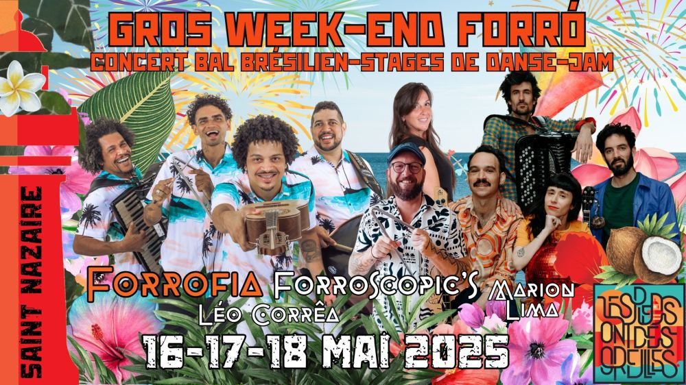

Gros Week-end Forró – Forrofia – Forroscopic’s – Stages – Jam

A l’occasion de leur tournée européenne en mai, nous accueillerons 🔥 FORROFIA 🔥, groupe brésilien sensationnel hyper connu là-bas.
Nous recevrons aussi FORROSCOPICS, quatuor de forró rennais qu’on love love love, MARION LIMA pour coacher notre danse et LEO CORRÊA pour diriger un stage et la jam session (à laquelle participeront les musiciens de Forrofia, soit dit entre nous 🤩) .
Tout se déroulera sur Saint-Nazaire et ce sera notre GROS WEEK-END FORRÓ 2025 🎉
FORROFIA: https://www.instagram.com/forrofiaoficial/
FORROSCOPICS: https://www.forroscopics.com/
MARION LIMA
https://www.instagram.com/marionpbp/
LEO CORRÊA
https://www.instagram.com/leodcorrea/
🥁 LE PROGRAMME 🥁
VENDREDI
👉 19h – 20h30: Apéro / Restauration à l’R du temps
👉 20h30 – 1h: bal forró/concert Forroscopics à l’R du Temps.
Initiation: 20h45. Concert: 21h30.
SAMEDI
👉 11h30 – 14h: brunch/dejeuner 🍳
FEIJOADA maison (12€, sur réservation ⚠️) ou apportez votre casse-croûte. Nous nous chargeons du café/thé/confiture. Salle Kerfaouet.
👉 Stages de danse forró 🕺💃
Dirigés par Marion Lima – salle Kerfaouet
★ 14h – 15h30: niveau 1
Cours accessible aux personnes ayant déjà dansées et maîtrisant les pas de base du forró.
★ 15h30 – 17h: niveau 2
Pratique courante du forró et bonne maîtrise des figures de base.
★ 17h – 18h30: niveau 3
Maîtrise totale des pas et des figures standards du forró
🥁 16h30 – 18h30: stage de percussions et chant de Nordeste (forro, coco, ciranda…)
Dirigé par Léo Corrêa. Toux niveaux. Salles des landettes
👉 19h – 20h30: Apéro / Restauration à l’R du temps
👉 De 20h30 – 1h: Concert Forrofia et bal forró
Initiation: 20h45. Concert: 21h30.
DIMANCHE
👉 11h30 – 14h: brunch/dejeuner 🍳
BAIÃO DE DOIS (plat traditionnel du nordeste – 12€, sur réservation ⚠️) ou apportez votre casse-croûte. Nous nous chargeons du café/thé/confiture. Salle Pagnol
👉 14h – 16h: stage de danse forró tous niveaux.
Dirigé par Marion Lima, salle Pagnol
👉 16h – 18h: temps libre – plage
👉 18h – 21h: apéro forró / jam session dirigée par Léo Corrêa et en compagnie de Forrofia
Lieu selon météo (lieu à confirmer)
🙌 VOUS VOULEZ NOUS AIDEZ ?
Nous cherchons des bénévoles pour organiser cet événement (et tous les autres…).
Contactez-nous par mail, nous proposons des réductions.
Nous cherchons également un PHOTOGRAPHE 📸 pour le week-end complet. Il pourra bénéficier du fullpass gratuit.
📍LES LIEUX
L’R du temps:
6 Rue François Marceau
https://maps.app.goo.gl/7KaVRa2zTmZY5NEPA
Salle de kerfaouet:
12B Rue des Pinsons
https://maps.app.goo.gl/N9UnPXBpSsQ7G6Ax9
Salle polyvalente Pagnol:
2 bis All. des Lilas, 44600 Saint-Nazaire
https://maps.app.goo.gl/7KaVRa2zTmZY5NEPA
Salle des Landettes:
44 Chem. d’Avalix, 44600 Saint-Nazaire
https://maps.app.goo.gl/ThqwcCp6xUKsDkJo6
Et la plage 🏖️
🛋️ DORMIR SUR PLACE
Contactez-nous pour le couchsurfing.
Ou appeler l’Auberge du Poulpe, la nouvelle auberge de Saint-Nazaire – 07 68 74 05 07 -(22€/lit)
💥 BILLETTERIE
Le détails des prix est sur HelloAsso.
🚗 COVOIT: c’est ici !
https://docs.google.com/spreadsheets/d/18pup31706aoBu_PXvhgpxJNuN4yYGhuRcLZrT8erUIk/edit?usp=sharing
☎️ CONTACT
07 63 47 55 85 / 06 60 40 15 17
lespiedsontdesoreilles@gmail.com
Ate logo logo !